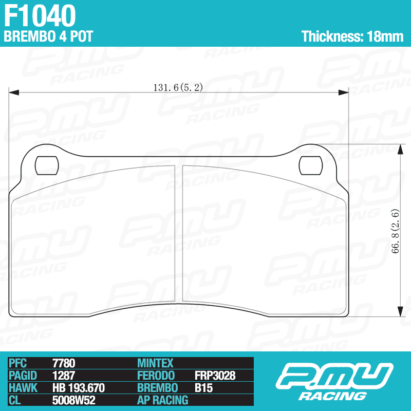
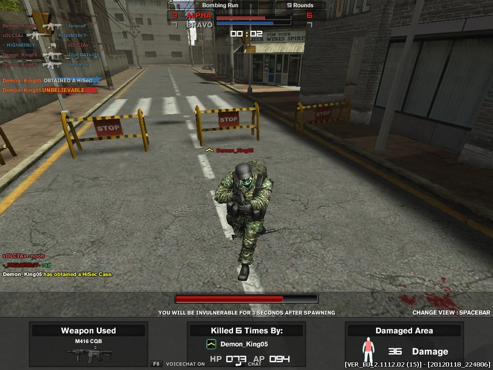
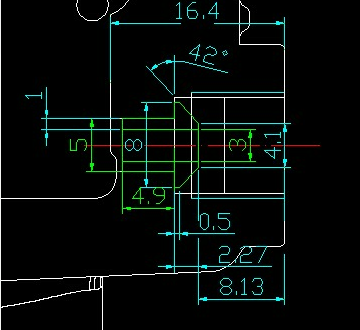

-
Re: Who's interested in 2-piece brakes?
[quote]michaelp wrote: [quote=Neil86t]Adam Van-asdg;oanwo;iwaea rocks the original BMC with his upgraded brakes and I think he said it worked awesome? not sure tho.Originally posted by Careless

1988 300zxt. gt35, stance, etc. Wheels: Varrstoen ES2 18x9.5 et-13 225/40. 18x10.5 et0 245/40
1990 jetta vr6'd -
Re: Response Type BIG BRAKE kit, 13 inches for non-turbo hub
I have never had pedal this good since I bought the car. OEM BMC, stainless lines and Wilwood BBK. I doesn't sink or feel soft.Elitist Prick Black Z owner.
1986 300zx Turbo
2011 Ford F150 Super Crew 4x2 EcoBOOST
1985 Toyota 4Runner, locked, lifted, geared, uglied.

-
Re: Response Type BIG BRAKE kit, 13 inches for non-turbo hub
i had the oem BMC and switched to a z32 1" bmc, it felt similar.
I wouldn't say the pedal modulation is worlds "better". but you really get a sense of how much more braking power the z32 caliper has when you switch. I like the Z32 bmc a little better. but either feels good/more than usable with the z32 calipers.
I can't say how well it would work on the huge calipers in this kit though. they're quite a bit larger than the already large upgrade that the z32 calipers provide. the bmc you use will have to be able to displace a lot more fluid from the master in order to make use of the entire stroke of all 4 pistons… on both sides, which is a lot more fluid. so i think the pedal feel with the OEM bmc is going to show its shortcomings on a kit like this.
i mean, looking at s-chassis upgades, people go to the z31 bmc as an in-between feel when upgrading to z32 brakes.
this kit is easily classified as an upgrade to both the skyline and the z32 calipers… so it seems as though the largest z32 bmc might be the one to make use of the entire fluid cavity in the caliper. -
Re: Response Type BIG BRAKE kit, 13 inches for non-turbo hub
Am I typing in english?Careless wrote:
I can't say how well it would work on the huge calipers in this kit though. they're quite a bit larger than the already large upgrade that the z32 calipers provide. the bmc you use will have to be able to displace a lot more fluid from the master in order to make use of the entire stroke of all 4 pistons… on both sides, which is a lot more fluid. so i think the pedal feel with the OEM bmc is going to show its shortcomings on a kit like this.Elitist Prick Black Z owner.
1986 300zx Turbo
2011 Ford F150 Super Crew 4x2 EcoBOOST
1985 Toyota 4Runner, locked, lifted, geared, uglied.
-
Re: Response Type BIG BRAKE kit, 13 inches for non-turbo hub
[quote]Neil86t wrote:Neil, unless you get close to the end of life on your pads/rotors, you won't begin to experience the downfall of the BMC. your pedal stroke will stop once the pedal reaches the floor, or the bmc piston reaches the end of the bore. If your brake caliper piston still has a lot more stroke to go, you effectively lose a lot (or all) of the clamping force because you haven't filled the caliper fluid cavity completely- and you won't be able to.Originally posted by Careless -
Re: Response Type BIG BRAKE kit, 13 inches for non-turbo hub
[quote]Careless wrote: [quote=Neil86t]toucheOriginally posted by CarelessElitist Prick Black Z owner.
1986 300zx Turbo
2011 Ford F150 Super Crew 4x2 EcoBOOST
1985 Toyota 4Runner, locked, lifted, geared, uglied.
-
Re: Response Type BIG BRAKE kit, 13 inches for non-turbo hub
Neil86t wrote: I have never had pedal this good since I bought the car. OEM BMC, stainless lines and Wilwood BBK. I doesn't sink or feel soft.
This is my exact same reaction. I have never had the pedal feel this good and firm even when I was running brand new stock rotors and pads all around. Now with the OEM BMC (original), stainless steel line, front Wilwood BBK, brand new stock everything in the rear its great. Best stopping power I have ever had.
On the blueZ I am still running the stock original BMC with z32tt caliper and 350z track rotor, SS lines and brand new everything in the rear. Pedal has never been firmer.
Now I have never been to the end of my life on rotors or pads on either bbk but I never plan letting it, but with a pedal feel this firm, I really doubt even at the end I am going go full pedal stroke.
The only real reason I would upgrade BMC is when my old stock unit seals finally reach the end of their long lives or I upgrade the rear calipers on either of my cars.
GE, post up the specs on the whatever caliper is being used and we can compare to the z32 and wilwood setups.
DeleriousZ wrote:
Adam Van-asdg;oanwo;iwaea rocks the original BMC with his upgraded brakes and I think he said it worked awesome? not sure tho. 86na - BlueZ
86na - BlueZ
Shiro #366 - Kouki Monster
85t - Mr Tickles -
Re: Response Type BIG BRAKE kit, 13 inches for non-turbo hub
FYI: z31 87T and z32 calipers have almost identical piston area, having 4 pistons in a fixed caliper is the same as 2 in a floating caliper in regards to fluid vs travel
The calipers I'm sourcing are 8% bigger piston area, which shouldn't be a ridiculous stretch for the 15/16's master, so nobody panic haha
Here's a diagram of the pad and cross reference part numbers at the bottom courtesy of p-mu
 -
Re: Response Type BIG BRAKE kit, 13 inches for non-turbo hub
I have the Z32 1-1/16" BMC with Z32 30mm calipers and stock rears and my pedal is stiff, but easily modulated. I like my pedal more stiff than stock, gives me more confidence under heavier braking.
1986 300ZX Turbo…sold
1990 Skyline GT-R…new money pit
2014 Juke Nismo RS 6-speed…daily -
Re: Response Type BIG BRAKE kit, 13 inches for non-turbo hub
Bolts arrived…

Last minute caliper fiddling --- inverted flare fitting
 -
Re: Response Type BIG BRAKE kit, 13 inches for non-turbo hub
Nice…
Better hurry, winter is coming in Chicago. :-(Usual Z31 suspect: Garage Queen (aka broken)

-
Re: Response Type BIG BRAKE kit, 13 inches for non-turbo hub
A slight bump here too, rotors and calipers are on the way to me, because of the season I doubt they'll arrive til mid-jan…
However I wanted to say that due to my amazing absent minded foresight, I will be able to make this kit available to 87+ TURBO hub owners as well with the introduction of a rotor spacer… I am working on the final dimensions for it, should only add 60-70$ to the kit or so…
Oh and one more pre-buy spot left, someone didn't step up… $650 plus ship for non-turbo hub, act fast
-
Re: Response Type BIG BRAKE kit, 13 inches for non-turbo hub
Is there still that spot left? Gonna see if my buddy that's not on the forums is interested. He has the bigger turbo strut tubes, but I think still the NA hubs. Anyone know a part number I can look for on his hubs or a measurement I can take to double check next time I'm out at his car?
Also curious for updates :P gettin antsy.
Build thread http://z31performance.com/showthread…-Paint-done-eh -
Re: Response Type BIG BRAKE kit, 13 inches for non-turbo hub
You have a hairy mail -
VERY interested in how this is progressing! been awhile since an update G-E!Damn dirty angels....these cars!
Current Daily Driver - 86 Turbo.
Under the cover - THE BANANA… that needs to be re-energized.
sigpic

Copyright © 2006–. All rights reserved. Privacy Policy